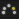
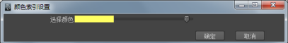

通过分层动画的重影，可以预览每个层添加有动画的对象的位置。通过“动画层编辑器”(Animation Layer Editor)中的重影选项，可以显示和隐藏在多个层设置了动画的对象的重影。
为层生成重影后，会绘制该对象的重影，以便对层堆栈求值时应达到并包括正在生成重影的层。例如，如果将对象添加到 AnimLayer1、AnimLayer2 和 AnimLayer3，则启用 AnimLayer2 的重影所显示的求值结果包括 BaseAnimation、AnimLayer1 和 AnimLayer2。AnimLayer3 的效果已排除。
注： 不需要为堆栈中的最高层生成重影，这是因为其重影将显示在与结果动画相同的位置。
通过使用重影选项，您可以指定在启用层的“重影”按钮 时为对象自动生成重影，也可以选择手动启用重影。
自动显示选定对象的重影
- 在“动画层编辑器”(Animation Layer Editor)的菜单栏中，选择“选项 > 自动为选定对象生成重影”(Options > Auto Ghost Selected Objects)（如果尚未选定）。
- 在场景中选择要生成重影的对象。
- 在“动画层编辑器”(Animation Layer Editor)中，为任意层启用“重影”按钮 。
将为选定对象启用重影。
显示某一层中所有对象的重影
- 在“动画层编辑器”(Animation Layer Editor)的菜单栏中，选择“选项 > 自动为层中的对象生成重影”(Options > Auto Ghost Objects In Layer)。
- 为要对其生成重影的对象所在的任意层启用“重影”按钮 。
将在场景中显示相应层的所有关联对象的重影，从而可以从每个层预览动画。
手动控制重影
- 在“动画层编辑器”(Animation Layer Editor)的菜单栏中，选择“选项 > 手动打开重影”(Options > Turn On Ghosts Manually)。
启用此选项后，可以使用主选项“可视化 > 为选定对象生成重影”(Visualize > Ghost Selected)和该层的“重影”按钮控制场景中要生成重影的对象。另请参见为对象生成重影。
设置重影颜色
- 在“动画层编辑器”(Animation Layer Editor)中的“重影”(Ghost)按钮  上单击鼠标右键。将打开“颜色索引设置”(Color Index Settings)。

- 拖动“选择颜色”(Select Color)滑块以选择新颜色并单击“确定”(Ok)。
层的重影按钮及其已设置动画的对象的重影会更改为您选择的颜色。
提示： 若要更改“颜色索引设置”(Color Index Settings)中的 20 种默认颜色，请选择窗口 > 设置/首选项 > 颜色设置(Window > Settings/Preferences > Color Settings)，然后更改“活动索引调色板”(Active Index Palette)中的颜色。请参见更改用户界面颜色。
默认情况下，动画层重影为深红色。您可以在“动画层编辑器”(Animation Layer Editor)中使用重影按钮为每个层更改已生成重影的对象的颜色。
注：
更改重影颜色也会设置“时间滑块”(Time Slider)中层的关键帧标记的颜色。

更改要显示的动画层重影的数量
- 从主菜单栏中选择“可视化 > 为选定对象生成重影(Visualize > Ghost Selected) >
 。
。
- 在“为选定对象生成重影”(Ghost Selected)选项中，将“重影类型”(Type of Ghosting)更改为“自定义帧步数”(Custom Frame Steps)。
- 将“当前帧前的步数”(Steps Before Current Frame)和“当前帧后的步数”(Steps After Current Frame)设置为 0。
现在，将在当前帧处针对每个层、每个对象显示一个重影。
重影为当前帧前后指定数量的帧显示已设置动画的对象的位置。您可以更改要显示的重影的数量，例如，如果只要查看当前帧的重影。